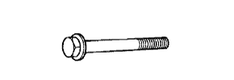
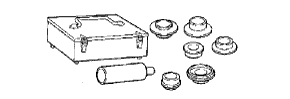
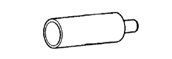
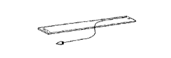
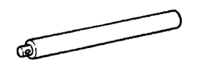
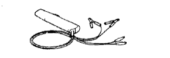

CVT Oil SealNo.1 (K112F) Preparation [Installation]
| 09213-54015 | Crankshaft Pulley Holding Tool | |
 | (91651-60855) | Bolt |
 | 09316-60011 | Transmission & Trans fer Bearing Replacer |
 | (09316-00011) | Replacer Pipe |
 | 09330-00021 | Companion Flange Holding Tool |
 | 09370-50010 | Driveline Angle Gauge |
 | 09670-00020 | Front Crossmember Guide Tool |
 | 09843-18040 | Diagnosis Check Wire No.2 |
 | 09950-60010 | Replacer Set |
| (09951-00390) | Replacer 39 | |
 | 09950-70010 | Handle Set |
 | (09951-07200) | Handle 200 |
 | 09961-01270 | Torque Wrench Adapter |
 | 09991-70200 | TaSCAN Set |
 | 09010-3C100 | Hexagon Wrench Set |
 | (09013-6C110) | Socket Hexagon 6mm |
| (09013-6C130) | Socket Hexagon 10mm |
 | 09010-3C110 | Hexagon Socket Wrench Set |
| (09013-6C110) | Socket Hexagon 6mm |
 | 09011-2C590 | Socket Wrench 30mm/12p |
 | 09013-1C530 | Torx Socket Wrench E8 |
 | 09051-1C300 | Chisel |
 | 09072-1C200 | Vernier Caliper 150mm |
 | KTL-12C | Timing Light (Current Detection Type) Supplied by Banzai Ltd. |
| RC-3TC | Resin Radiator Cap Tester Adapter Set Supplied by Banzai Ltd. | |
| RCT-2A | Radiator Cap Tester Supplied by Banzai Ltd. | |
| IRC-3TC | Resin Radiator Cap Tester Adapter Set Supplied by Iyasaka Co., Ltd. | |
| RCT-3 | Radiator Cap Tester Supplied by Iyasaka Co., Ltd. | |
 | TL-12C | Timing Light (Current Detection Type) Supplied by Iyasaka Co., Ltd. |
 | QL-100N | QL Torque Wrench (100N) Supplied by Banzai Ltd. and Iyasaka Co., Ltd. |
| QL-200N | QL Torque Wrench (200N) Supplied by Banzai Ltd. and Iyasaka Co., Ltd. |
| QL-25N | QL Torque Wrench (25N) Supplied by Banzai Ltd. and Iyasaka Co., Ltd. |
| QL-280N | QL Torque Wrench (280N) Supplied by Banzai Ltd. and Iyasaka Co., Ltd. |
| QL-50N | QL Torque Wrench (50N) Supplied by Banzai Ltd. and Iyasaka Co., Ltd. |
 | PLA-15 | Height Adjustable Attachment Supplied by Banzai Ltd. |
 | PLA-2 | Plate Lift Attachment Supplied by Banzai Ltd. |
 | UEL-500N | Universal Engine Lifter Supplied by Banzai Ltd. |
 | IUL-500T | Universal Engine Lifter Supplied by Iyasaka Co., Ltd. |
 | IUL-B | Height Adjustable Attachment Supplied by Iyasaka Co., Ltd. |
 | NCH-201 | Plate Lift Attachment Supplied by Iyasaka Co., Ltd. |
| CO/HC Meter | ||
| Toyota Genuine MP GreaseNo.2 | ||
| Toyota Genuine CVT Fluid TC | ||
| Toyota Genuine Hypoid Gear Oil SX | ||
| Toyota Genuine Super Long Life Coolant | ||
| Toyota Genuine Engine Oil | ||
| Wooden Block | ||
| Adhesive1324 V93500114 Supplied by Tacti Corporation |